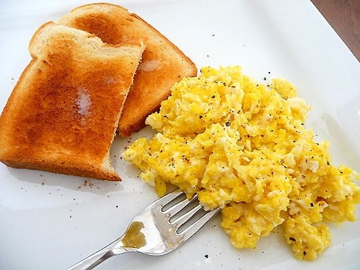
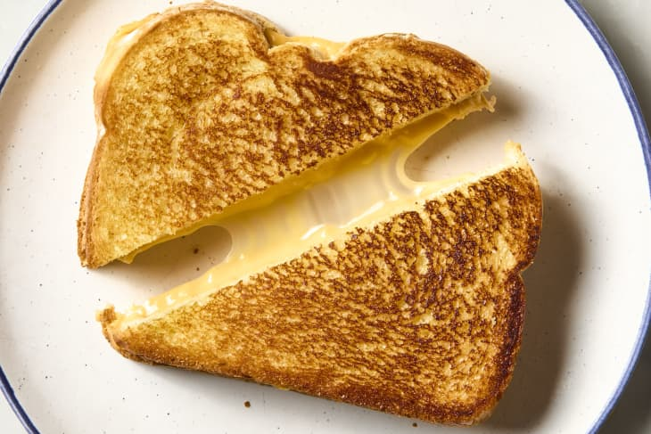
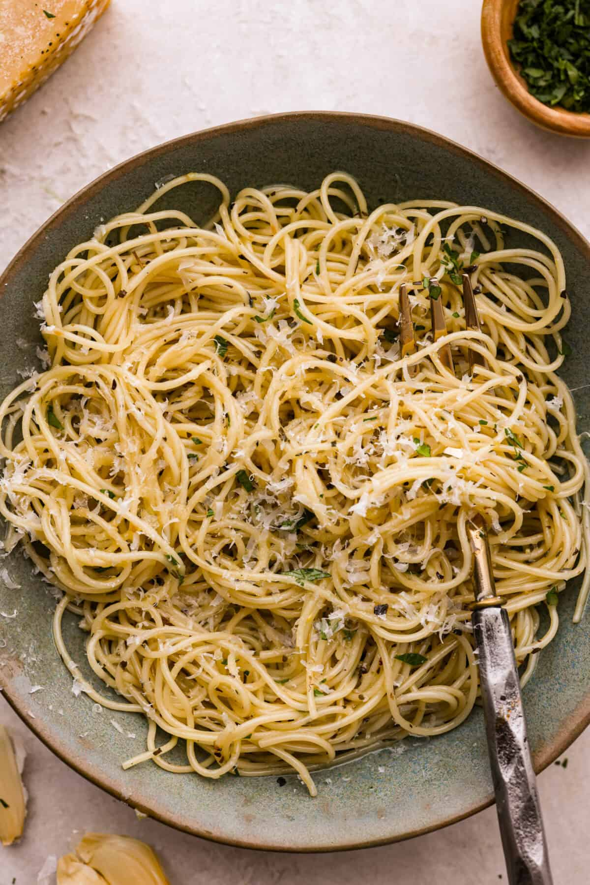
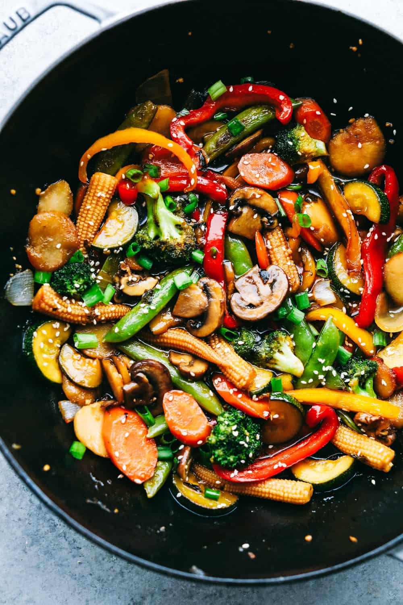
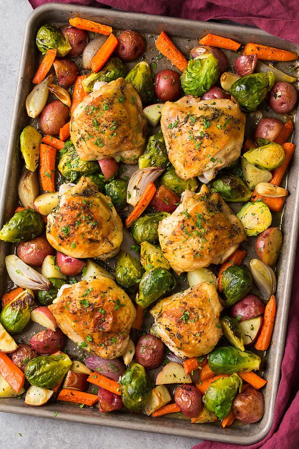

Website created by Emily Grant, a student at Strayer University





One missing ingredient shouldn't stop you from cooking. Most recipes have simple swaps using what you already have on hand.
No buttermilk? Use 1 tablespoon (Tbsp) lemon juice or vinegar + enough milk to make one cup. No fresh garlic? Use 1/8 teaspoon (tsp) garlic powder per clove.